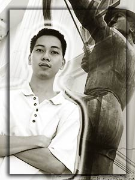

| Flavors
of the Term
Albert
Mabait, business-minded, may asawa na (sa panaginip ng asawa
ko) ... - Anonymous
Certified babe magnet... graphics artist na mathematician...
- Anonymous
simple
person pero wag ka...pure blooded lasallian. Medyo snob looking
pero hindi totoo yon, tahimik sa umpisa pero extreme kapag
dumaldal na, pero sensible kausap. Matalinong nilalang, statistician
at mathematician ba naman. At dahil mathematician, math-inik
din sa chicks. Dame girlfriends! Hindi lang panlupa ang kakisigan
nito, maging sa langit, may BITUIN na nangagarap sa knya,
maging mga ANGHEL na ipadadala sa knya naiinlove din sa knya.
Mukhang iskul boy na inutusan lang na bumili ng suka sa kanto
pero serious na sa buhay at napaka-business minded. Mabait
at masarap maging ka-berks. Grabe, todo na ito.....to the
highest level! - Anonymous
si albert ang laging greeting nyan sakin "trish!"
one time dinalhan ako nyan ng cupcake...sabi ko pandesal lang
eh..pero cupcake ang dinala niya sakin..pabili nga sana yon
eh pero binigay na lang niya..nahiya na ulit ako magpabili
kse bka bigay na naman niya..hehehe... anyways, albert has
always been so quiet..pero i find him cool...kelan mo ba talaga
tatapusin yung kanta?? - Trish
Aspiring businessman…future franchisee of the year!...Pakalat-kalat
sa malls, iba-iba ang kasama... Chickboy?...Sinuot na kaya
niya yung nakuha nyang “gift” nung Christmas party?...Maaasahan
sa pag-update ng DLSU-Manila website - Harold Paulo
Math Wiz, Entrepreneur, Chick Magnet, Boy Coño, ATM
ng bayan, True Friend… - Anonymous
'stig, negosyante (dami yata raket!) - Anonymous
Coñong Jologs, business-minded, easy-going guy, pwedeng
utangan basta may pera! - Anonymous
The first time I met Albert (on his interview), he looked
so quiet and fragile. he behaved like other interviewees,"isang
tanong, isang sagot" but his future plan to reach his
goal was impressive. but later on, i found out that he is
a quiet but "matinik" kind of guy, (not only to
girls but also to money-making ventures). he has a lot of
ideas and would really exert efforts to test these. he is
a "family guy" material and would go out of his
way to help his family and anybody in need. - Celine
Concert king ng ITC. Huwag lang bigyan ng microphone. He!
He! Kidding aside, Albert is one of ITC's most eligible bachelors.
Very dependable and helpful. - Brian
Bobby
Ever
loyal fan ni Ampel at ni Brian, one of the few who have perfect
attendance in ITC, hindi inuurungan ang "kalaban"
(kahit na Admin ito), makulit ... - Anonymous
may paninindigan... yan si bobby... - Anonymous
Si Digs ng ITC…The Negotiator…Maaasahan sa pagbigay
ng gasoline receipts…Walang inaatrasan, may “consultation
schedule” nga lang syang dapat sundin…Favorite
ni Ms. Kay at ni Betty Lafea… Chuck full of ideas…
Nilalapitan at maaasahan sa anumang problemang “Financial.”
- Harold Paulo
Full of ideas, Outspoken… Digs, is that you?!? - Anonymous
lapitin ng mga hindi na masyadong batang single ladies. -
Anonymous
makulit.... dating apple of the eye ni _________ :) ... naging
malungkutin simula ng "the doctor is always out"
:) - Anonymous
attorney! hehe si bobby sabi niya 42 years old siya..pero
ka batch daw niya si aga muhlach..labo noh? anyways, nalito
rin ako nung sinabi niya ito... my supplier of chicharon...
naku ayaw niya akong tumanda talaga...tsk tsk - Trisha
Basta may katwiran, ipaglalaban. Buti na lang nasa ITP meeting
lagi. -Anonymous
Boyet
Ang
naalala ko talaga sa kanya ... minsan, dumadaan ako sa harap
niya habang may kausap siyang ibang tao, para bang walang
taong dumaan sa harap niya't kausap pa rin niya ang kausap
niya!?! Iba na talaga ang matangkad!!! - Anonymous
sa pagkakilala ko sa taong to, loyal friend sya... -
Anonymous
Biglang sumikat – sa di malilimutang insidente nung
Sportsfest this year sa Lipa...hindi pwedeng hindi mo mapansin,
matangkad kase at malalim ang boses…Madalas mag-reach
ng boiling point kapag nasa court…Favorite ni Lemuel,
and vice-versa... - Harold Paulo
Loud-Mouth On-And-Off-The Court, Hot-Head On-The-Court, Friend
Off-The-Court… - Anonymous
tangkad! - Anonymous
--batang "star" siya... - Trisha
All-around athlete. Be it basketball, volleyball, badminton,
or ping-pong, Boyet is sure to be there. - Brian
|